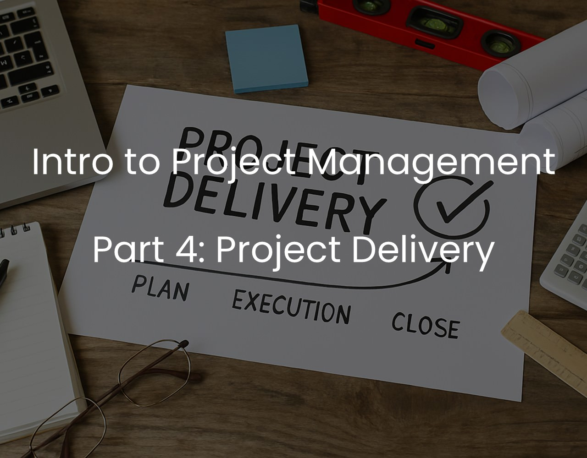

Introduction to Project Management | Part 4: Project Delivery
Project delivery involves thorough testing, client training, careful team management, and capturing lessons to improve future projects.

As we progress in our careers and gain valuable experiences, we often find ourselves thrust into roles we knew little about, tasked with delivering value to our companies, clients, and even ourselves. Regardless of our current positions, the need to plan and oversee projects frequently arises. We strive to excel in our responsibilities, usually learning through the challenges we face. In our pursuit of professional growth, knowledge, guidance, and support become our allies.
In this series, I'll guide you through the world of project management, breaking it down into five essential parts to make the journey more manageable. This will follow closely Richard Newton’s ‘Project Management Step by Step’ [1], which provides a clear and concise step-by-step process on how to structure, monitor and finish a project. I will use the book as a guide, coupled with my own personal experience in project management.
- Part 1: Starting a Project: Discover the core concepts of project management, including what defines a project, the role of a project manager, and the dimensions that shape your projects.
- Part 2: The Project Plan: Learn how to create a comprehensive project plan that serves as your roadmap to success, ensuring your projects stay on track.
- Part 3: Project Execution: Explore strategies for effectively executing your projects, managing teams, and overcoming unexpected challenges.
- Part 4: Project Delivery: Navigate the final stages of project management, ensuring that your projects are successfully delivered and meet all objectives.
- Part 5: Templates: Access a valuable resource in the form of templates and tools, simplifying your project management tasks and saving you time and effort.
Let's continue on this journey of project management together with Part 4: Project Delivery. Click on the links above to navigate to the specific part you're interested in, or follow the series sequentially to gain a comprehensive understanding of project management best practices.
Project Delivery
Project Managers often do not consider the impact and effort required to complete a project. Finishing a project does not mean simply producing the deliverables but also correctly managing the delivery to the client. This is what differentiates an average project manager from the outstanding one, as these are steps which are regularly forgotten.
When the project deliverables are ready (i.e. in the case of a new software being implemented), they should be thoroughly tested to ensure they meet the requirements and scope of the project. If a project deliverable needs to be explained to the client, a process will need to be set up (and included in the original project plan) to ensure the customer is trained and has assistance with their deliverables. Some deliverables require support even if a customer has been trained on how to use them. It is important in such cases to allow for a brief period of time even after the training to provide support to the customer and for them to feel comfortable in using them.
As the project progresses and completed, people no longer required on the project can be released from the project team. However, make sure to always do this with caution. Only release people from the team if you are sure that they have completed all the tasks required and you have the confidence that you will not need them at a later stage (i.e. when completing the project) for any testing and implementation required.
When a project is completed it has valuable lessons to teach you for your next one. Make sure to setup a process to review what went right and what went wrong to assist you in the next project that you tackle. This review should involve the project team – and if you can, the project customer as well. During your review take note to answer the following questions.
- What went well and what will you do again on your next project?
- What went badly and will you do differently on your next project?
- What will you start doing? What didn’t you do on this project that in hindsight would have been good to do?
- Is there anything else you have learnt that is worth remembering for next time?
Congratulations, you now have the knowledge to successfully plan, structure, implement and deliver your first project. An excellent way to continue to expand your knowledge is to check out in more detail the references of this article, including Wrike’s Glossary in Project Management [5].
Conclusion
In the dynamic world of project management, it's not just about reaching the finish line; it's about crossing it with finesse. Completing a project is not merely delivering the goods but ensuring a smooth handover to the client. Exceptional project managers understand the value of comprehensive testing, client training, and ongoing support.
As the project nears completion, resource management becomes critical. Releasing team members must be done judiciously to ensure all tasks are wrapped up seamlessly.
Moreover, every project is a valuable teacher. Post-project reviews offer invaluable insights, helping you refine your strategies for future endeavors. So, embrace the journey, learn from every step, and elevate your project management skills to new heights.
In the final part of our Project Management series, "Part 5: Templates" you will find valuable resources to aid you in various aspects of project management.
References
[1] Richard Newton - Project Management Step By Step, Pearson Education Limited
[2] PMI - A Guide to the PMBOK
[3] Wrike Inc - Project Management Methodologies
[4] Anna Mar - 130 Project Risks
[5] Wrike Inc - Project Management Glossary